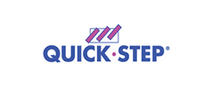

Nuestros clientes


55 8742 6237
Nuestras evaluaciones poligráficas les permitirán contar con una mayor seguridad para tomar las mejores decisiones con información precisa y certera sobre la confiabilidad de sus colaboradores. Detecte posibles riesgos en el trabajo, solucione problemas derivados del uso indebido de información o recursos de su empresa, seleccione a un personal honesto e íntegro que formará parte de su equipo de trabajo. Le ayudamos a proteger a su empresa desde la contratación de su personal hasta la permanencia de colaboradores confiables.
Conozca el grado de confiabilidad de sus candidatos y determine si su incorporación representa un posible riesgo para su empresa.
Evite riesgos que le pueden costar mucho dinero, prevenga eventualidades e ilícitos que dañan el prestigio y la confianza que depositan sus clientes en su empresa.
Diseñamos el perfil básico de honestidad que le permita: determinar si sus prospectos se han involucrado en conductas delictivas o consumo de sustancias nocivas, detectar tendencias a la comisión de delitos, fugas de información, contacto con drogas ilegales, vinculación con grupos delictivos y cualquier comportamiento que perjudique directa o indirectamente a su empresa y pueda comprometer la seguridad sus activos.
Evaluación para personal de nuevo ingreso, conozca el grado de confiabilidad de sus candidatos y determine si su incorporación representa un posible riesgo para su empresa.
El polígrafo de preempleo le permitirá conocer el nivel de lealtad, honestidad y confiabilidad del candidato con gran precisión.
El objetivo principal de la prueba del polígrafo para pre-empleo es el de evitar riesgos que le pueden costar mucho dinero, así como prevenir eventualidades e ilícitos que dañan el prestigio y la confianza que depositan sus clientes en su empresa.
La prueba de polígrafo de permanencia le permitirá reafirmar la confiabilidad de sus colaboradores en el desempeño de su labor y evitará que la calidad, así como el estándar de seguridad de su empresa sea vulnerado, asegúrese de contar con personal altamente confiable en todo momento. Evite el desarrollo de prácticas que falten a la normatividad interna, alteren el clima laboral y representen un riesgo a futuro.
Esta prueba está dirigida a la evaluación de personal con más tiempo en la empresa y personal de confianza. Su aplicación le permitirá prevenir y detectar anticipadamente con precisión cualquier acción en contra de su empresa, tales como: fraude o falsificación, robos, fuga de información sensible, conspiración y cualquier otra actividad de la que se tenga sospecha.
Mantenga los estándares de confiabilidad, seguridad y desempeño en su organización. Filtre al personal calificado para cargos con mayor responsabilidad dentro de tu empresa.
Detecte posibles conductas ilícitas, confirme o descarte participación directa o indirecta en comisión de delitos o personal involucrado en ilícitos como fuga de información, robo, asalto, lesión a personas, daño en propiedad privada, delito sexual, homicidio imprudencial secuestro, extorsión, fraudes, etc. Descarte / confirme actos indebidos, ilícitos y/o acciones contra su empresa, identifique al personal que represente un riesgo para sus bienes y tome acciones para proteger a su empresa.
Esta prueba está dirigida a la evaluación de personal sospechoso con presunta participación en hechos ilícitos, para confirmar o descartar la participación directa o indirecta en conductas que dañan a su empresa y constituyen un delito.
Determine si su personal se ha involucrado en conductas delictivas y/o ilícitos como: robo, asalto, lesión a personas, daño en propiedad privada, delito sexual, homicidio imprudencial secuestro, extorsión, fraudes, etc.
Nuestro objetivo es brindarte la confianza y seguridad en la contratación del personal que usted está contratando haciendo uso de diferentes filtros personalizables de acuerdo a sus necesidades de contratación.
55 8742 6237